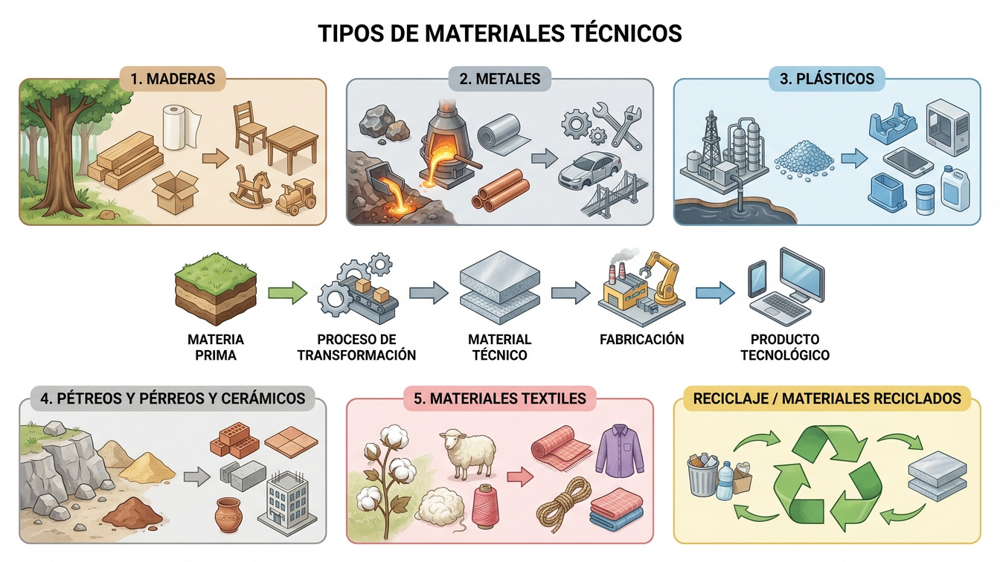
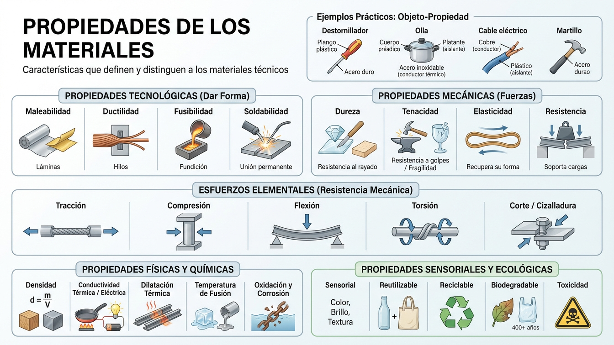
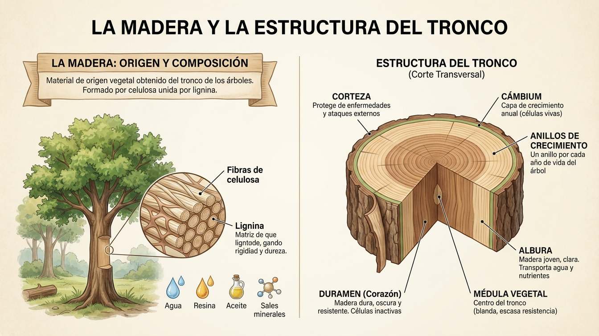
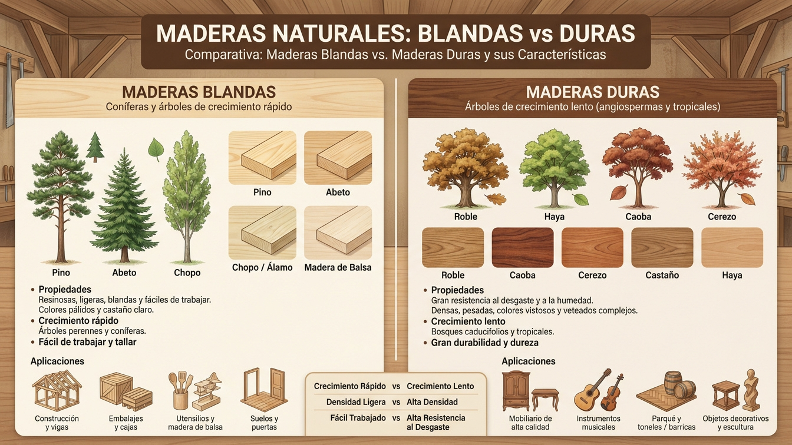

CLASIFICACIÓN DE LOS MATERIALES 📦
Nuestro entorno está repleto de toda clase de materiales que utilizamos constantemente. Para comprender cómo se diseñan los objetos técnicos, es necesario analizar su origen y transformación.
Los objetos que utilizamos habitualmente se fabrican a partir de distintos materiales. Estos materiales tienen su origen en la naturaleza, de donde obtenemos las materias primas, como la lana, la madera, el corcho, la arcilla, el mineral de hierro, etc. A partir de esas materias se obtienen materiales naturales y materiales transformados.
Algunos objetos se pueden construir directamente con los materiales tal y como se obtienen de la naturaleza. Decimos entonces que se han utilizado materiales naturales. Sin embargo, en la fabricación de la mayoría de los objetos, los materiales no se utilizan tal y como se obtienen de la naturaleza, sino que sufren modificaciones mediante algún proceso de transformación. A estos materiales los llamamos materiales transformados, que pueden ser artificiales o sintéticos.

Desde el punto de vista técnico, los materiales que empleamos para fabricar los objetos se pueden clasificar en cinco grandes grupos:
Con estos materiales se fabrican muebles, ordenadores, automóviles, instrumentos y máquinas diversas; también se utilizan para la construcción de casas, edificios, parques, puentes, etc.
PROPIEDADES DE LOS MATERIALES ⚙️
Las propiedades de los materiales son el conjunto de características mediante las cuales los podemos definir y distinguir unos de otros. La elección de estos materiales viene determinada, en cada caso, por sus propiedades para cumplir la función asignada.
Ejemplos Prácticos de Relación Objeto-Propiedades:

Clasificación Detallada de las Propiedades:
2.1. Propiedades Tecnológicas
Definen el comportamiento de los materiales cuando se trabajan para darles forma.
- Maleabilidad: Capacidad de extenderse fácilmente en láminas al aplicar presión (ej. papel de aluminio, metales y plásticos).
- Fusibilidad: Capacidad para pasar de sólido a líquido al someterse a calor para verterse en moldes (ej. bronce, latón y hierro).
- Ductilidad: Cualidad de extenderse formando hilos delgados (ej. oro, plata, cobre, plomo, aluminio y plásticos).
- Soldabilidad: Capacidad de poder ser unidos permanentemente por soldadura (ej. aceros y plásticos).
2.2. Propiedades Mecánicas
Muestran el comportamiento de los materiales sometidos a la acción de diversas fuerzas.
- Dureza: Resistencia que ofrecen a ser rayados o penetrados. Los materiales duros rayan a los blandos.
- Tenacidad: Propiedad de sufrir golpes o impactos sin romperse. Los materiales que no resisten golpes se denominan frágiles.
- Elasticidad: Permite recuperar la forma original tras haber sido deformados. Si persiste la deformación, se llaman plásticos.
- Resistencia mecánica: Propiedad para soportar esfuerzos sin deformarse excesivamente ni romperse.
2.3. Propiedades Físicas y Químicas
Muestran el comportamiento ante el calor, la electricidad, la humedad o la gravedad.
- Densidad: Indica la cantidad de masa por volumen. Expresión: densidad = masa (kg) / volumen (m3).
- Conductividad térmica: Capacidad de transmitir el calor (los metales son conductores; madera, plástico y cerámica son aislantes).
- Dilatación térmica: Aumento de volumen al calentarse. Especial incidencia en los metales.
- Temperatura de fusión: Punto donde un material pasa de sólido a líquido (el hielo funde a 0ºC).
- Conductividad eléctrica: Capacidad para dejar pasar la corriente eléctrica (los metales conducen; la madera es aislante).
- Oxidación: Reacción química al combinarse con el oxígeno creando una capa de óxido superficial.
- Corrosión: Oxidación producida en presencia de agua. Es más peligrosa porque la capa se desprende y destruye el material.
2.4. Resistencia Mecánica: Esfuerzos Elementales
Los elementos estructurales sufren fuerzas externas que tienden a deformarlos o desplazarlos:
- Tracción: Esfuerzo donde las fuerzas actúan tendiendo a estirar el elemento.
- Corte (o cizalladura): Esfuerzo donde las fuerzas actúan tendiendo a cortar la pieza.
- Compresión: Esfuerzo donde las fuerzas actúan tendiendo a comprimir o aplastar.
- Flexión: Esfuerzo donde las fuerzas actúan tendiendo a curvar o doblar el elemento.
- Torsión: Esfuerzo donde las fuerzas actúan tendiendo a retorcer la pieza.
2.5. Propiedades Sensoriales y Ecológicas
Las sensoriales (color, brillo, textura, acústica, olor) deciden la elección de un producto por su impacto visual o impresión. Las ecológicas valoran el daño ambiental en su obtención, transformación y uso:
- Reutilizabilidad: Capacidad de volver a usarse para el mismo fin o uno nuevo sin transformar el material (ej. donar ropa).
- Reciclabilidad: Capacidad de ser transformados mediante procesos industriales para ser útiles de nuevo (ej. madera natural a tableros prefabricados).
- Biodegradabilidad: Facilidad para descomponerse de forma natural en sustancias simples (el papel tarda de 1 a 5 meses; el plástico más de 400 años).
- Toxicidad: Grado de nocividad para el medio ambiente y los seres vivos (ej. el amianto de la antigua uralita).
LA MADERA: ESTRUCTURA Y PROPIEDADES 🪵
La madera es uno de los materiales de uso técnico más utilizados por el hombre a lo largo de la historia, debido a su fácil obtención y a sus propiedades. Es un material de origen vegetal que se obtiene de las partes leñosas de los troncos de los árboles.
Está formada por fibras de celulosa unidas por lignina, una sustancia que proporciona rigidez y dureza. También contiene agua, aceite, resina y sales, que se aprovechan industrialmente.
Estructura del Tronco
El tronco presenta capas concéntricas formadas anualmente por el cámbium:

- Corteza: Protege la madera de enfermedades y ataques externos.
- Cámbium: Capa de crecimiento del árbol formada por células vivas.
- Anillos de crecimiento: Cada anillo corresponde a un año de vida del vegetal.
- Albura: Parte joven de la madera. De color claro, transporta agua y nutrientes. Usada para trabajos de escasa exigencia.
- Duramen (o corazón): Madera dura y consistente formada por células inactivas en el centro. Más oscura, por ella ya no fluye savia.
- Médula vegetal: Zona central del tronco de escasa resistencia mecánica (no suele utilizarse).
Obtención de la Madera (Procesos)
| Proceso | Descripción |
|---|---|
| Talado | Se realiza con sierras mecánicas. Una vez talado el árbol, se poda para eliminar las ramas y las raíces. |
| Descortezado | Esta operación se puede realizar en el lugar donde se ha hecho la poda o en las serrerías. |
| Aserrado | Se utilizan sierras circulares o cintas. Cada tronco se corta según sus características y uso posterior. |
| Secado | La madera contiene agua y es necesario realizar el proceso de secado antes de trabajar con ella. |
| Acabado | Se protege para evitar parásitos o pudrición mediante pinturas o barnices. |
Propiedades Específicas de la Madera:
- Es buen aislante eléctrico y térmico, aunque arde con mucha facilidad.
- Es conductor acústico (usada en instrumentos musicales y como aislante en techos).
- Tiene una densidad menor que la del agua, por lo que flota.
- Es flexible y resiste bien esfuerzos de compresión y de tracción.
- Tiene hendibilidad: se parte fácilmente en el sentido de las fibras o vetas.
- Anisotropía: Sus propiedades mecánicas cambian radicalmente según el sentido de corte respecto a las fibras.
- Dureza variable: las maderas fibrosas son duras y las porosas son blandas.
- Es un material poroso capaz de absorber o desprender humedad. Esta propiedad se llama higroscopicidad.
TIPOS DE MADERA Y DERIVADOS 🌲
Maderas Naturales

| Tipo | Característica | Descripción |
|---|---|---|
| Maderas blandas | Propiedades | Resinosas, blandas y ligeras, de fácil trabajado. Las coníferas resisten muy bien la intemperie. Colores pálidos o castaño claro. |
| Origen | Crecimiento rápido: coníferas/perennes (pino, abeto, ciprés) y hoja caduca (abedul, chopo, balsa). | |
| Aplicaciones | Construcción, embalajes, utensilios de cocina, embarcaciones, suelos, puertas y ventanas. | |
| Maderas duras | Propiedades | Muy resistentes al desgaste y a la humedad. Colores muy vistosos y veteados apreciados. |
| Origen | Angiospermas de hoja caduca y tropicales de crecimiento lento: roble, castaño, cedro, boj, haya, cerezo y caoba. | |
| Aplicaciones | Mobiliario de alta calidad, objetos decorativos, instrumentos musicales, toneles y parqué. |
Maderas Prefabricadas (Tableros)
Se obtienen a partir de restos de tala y poda sometidos a triturado, encolado y prensado. Solucionan problemas de tamaño, humedad y anisotropía.

| Aglomerado | Contrachapado | Fibras Densidad Media (DM/MDF) | Alta Densidad (HDF) |
|---|---|---|---|
| Fabricado con virutas de madera prensadas y encoladas. | Chapas finas encoladas con las vetas cruzadas a 90°. | A partir de fibra de madera sin lignina, prensada en seco. | Madera y agua prensadas a alta presión y temperatura. |
| Resistente pero no soporta la humedad. Se recubre de melamina. | Muy resistente pero sensible a cambios de temperatura/humedad. | Resistente, compacta, no se pudre. Fácil de pintar. | Cara lisa y cara rugosa. Muy rígido. |
| Uso: Muebles económicos, tabiques interiores. | Uso: Puertas, embalajes, embarcaciones. | Uso: Revestimientos interiores y exteriores, muebles. | Uso: Fondos de armarios, cajones y suelos. |
Derivados de la Madera
Papel y Cartón
Se obtiene de la celulosa de los árboles mediante varias etapas: 1. Triturado y mezcla con agua para formar pasta de celulosa; 2. Adición de reactivos químicos para blanquear y secado en plano; 3. Prensado por rodillos para alisarlo en bobinas. El cartón y la cartulina son productos celulósicos derivados.
Corcho
Se obtiene de la corteza del alcornoque o encina mediante el "descorche". Es poroso, muy ligero, elástico y un aislante térmico/acústico excepcional. Se usa en tapones, aislamientos, calzado y complementos.
TÉCNICAS DE MECANIZADO, UNIÓN Y ACABADO 🛠️
Para construir cualquier objeto de madera en el taller es necesario seguir una secuencia de operaciones con las herramientas y normas de seguridad adecuadas:

| Fase del Proceso | Herramientas / Máquinas | Operación / Técnica | Precauciones de Seguridad |
|---|---|---|---|
| Medir y trazar | Regla metálica, escuadra de carpintero, lápiz, compás de puntas. | Trazado de cotas y comprobación de perpendicularidad (90º). | Evitar deslizar el lápiz hacia el cuerpo. Mantener puntas hacia abajo. |
| Sujetar | Tornillo de banco, sargentos / gatos de apriete. | Inmovilización de la pieza para trabajar con precisión. | No apretar en exceso piezas blandas para no dejarlas marcadas. |
| Cortar y serrar | Sierra de marquetería (segueta), serrucho ordinario, serrucho de costilla. | Corte rectilíneo o curvo en función de la veta. | Gafas de protección. Mano libre alejada de la línea de corte. |
| Desbastar y lijar | Escofinas (plana, media caña), limas, papel de lija. | Eliminación de rebabas y afinado de superficies. | Limpiar virutas con cepillo, nunca soplando (riesgo para los ojos). |
| Perforar | Barrena manual, taladro de columna, brocas para madera. | Ejecución de agujeros pasantes o ciegos. | Recoger pelo largo, no llevar prendas holgadas y usar gafas. |
| Unir | Cola blanca de carpintero, tirafondos, clavos, espigas. | Uniones fijas (pegadas) o desmontables (atornilladas). | Dejar secar bajo presión de sargentos mínimo 24 horas. |
| Acabar | Tintes, barnices al agua, pinturas acrílicas, ceras. | Protección contra agentes externos y mejora estética. | Aplicar siempre en zonas bien ventiladas. |
IMPACTO AMBIENTAL Y USO SOSTENIBLE 🌲🌱
La madera posee propiedades ecológicas muy favorables al ser un recurso renovable, biodegradable y reciclable. Sin embargo, su ciclo de vida —desde la extracción en el bosque hasta su transformación industrial— conlleva importantes retos medioambientales que requieren medidas de control y gestión sostenible:
La tala abusiva e incontrolada de masas forestales sin criterios de repoblación provoca la destrucción de hábitats naturales, alterando los ecosistemas y reduciendo drásticamente la fauna y flora locales. Al desaparecer la cubierta vegetal, el suelo queda expuesto a la erosión del viento y la lluvia, acelerando procesos de desertización y reduciendo la capacidad natural del planeta para absorber dióxido de carbono.
Vínculo con los ODS: El ODS 15 (Vida de ecosistemas terrestres) busca proteger, restablecer y promover el uso sostenible de los bosques, luchar contra la desertificación y frenar la pérdida de biodiversidad.
La transformación de la madera, especialmente en la industria papelera, tiene un alto impacto ambiental. Para obtener la celulosa pura a partir de la pulpa de madera, se emplean compuestos químicos agresivos (como derivados del cloro o compuestos de azufre) destinados a eliminar la lignina y blanquear el papel. Este proceso demanda enormes cantidades de agua y puede generar vertidos tóxicos si no se depuran correctamente, además de emisiones atmosféricas y consumo energético elevado en el transporte y secado.
Vínculo con los ODS: El ODS 6 (Agua limpia y saneamiento) promueve la gestión sostenible y el uso eficiente de los recursos hídricos. En este ámbito, el sector papelero en España ha logrado reducir su consumo de agua en más de un 30 % durante las últimas décadas mediante circuitos cerrados de reutilización y tecnologías más limpias.
Certificación Forestal Internacional
Para garantizar que los productos derivados de la madera proceden de bosques gestionados con criterios ecológicos, sociales y económicos responsables, existen sistemas de certificación independientes:
- FSC (Forest Stewardship Council): Asegura que la madera proviene de bosques bien gestionados donde se respeta la biodiversidad, los derechos de los trabajadores y las comunidades locales.
- PEFC (Programme for the Endorsement of Forest Certification): Certifica la sostenibilidad forestal adaptada a estándares nacionales y regionales, verificando toda la cadena de custodia desde el monte hasta el consumidor final.
Uso Sostenible y Economía Circular
Durante su crecimiento, los árboles actúan como sumideros de carbono absorbiendo CO2, que queda retenido en los objetos de madera durante toda su vida útil. Para maximizar este beneficio y evitar la sobreexplotación, aplicamos la regla de las 5 R:
- Reducir: Optimizar los diseños y procesos de corte para minimizar el desperdicio de materia prima y evitar el consumo innecesario (como el papel de un solo uso).
- Reutilizar: Dar una segunda vida directa a elementos de madera sin apenas transformarlos (como palés convertidos en mobiliario o vigas recuperadas).
- Reparar: Restaurar muebles, puertas o suelos dañados en lugar de desecharlos y comprar otros nuevos.
- Reciclar: Triturar restos de madera y papel usado para fabricar nuevos productos, como tableros aglomerados (DM, contrachapado) o papel reciclado.
- Recuperar: Aprovechar energéticamente los residuos que ya no pueden reciclarse (serrín, cortezas, restos de poda) transformándolos en biocombustibles como pellets o briquetas.
Material Didáctico y Evaluación
Accede a toda la documentación de trabajo, herramientas de repaso interactivas y ejercicios prácticos de la unidad.
2. Práctica y Repaso Interactivo
3. El Reto Práctico
¡Acepta el Desafío Cubo Soma 3D!
Diseña, acota, dibuja las vistas y construye las 7 piezas del rompecabezas en equipo. ¿Seréis capaces de alcanzar la máxima nota completando el reto 3D?